Final map with the CMB weight; in the middle panel (the map at ACT resolution on the ACT scale) the central decrement is deeper than in the white-weight map of the section above.
Last updated 2026-10-20. Branch needlet, master merged.
New here? Step by step walkthrough of twores_ex.py, including what solve_bands does.
For each needlet band i the noise precision is computed on a downsampled lattice of pixels, Gi = KiT O Ki, with Ki the band-limited real-space response of a unit coefficient. O is PTN-1P for the M2 TODs and a map-space inverse covariance for ACT. The combined coefficients solve (GM2+GACT)c = KT(rhsM2+rhsACT) per band; the map is wav2map_real of the zero-filled coefficients. Cross-band blocks are neglected (design of the project).

Old: one full TOD pass (plus ~2*nfilt full FFTs) per lattice pixel, dense (npixred x npix) float32; the committed run stored ~87 GB.
New: impulses spaced further apart than a window of half width radius are probed together, so only ~(2*radius/downsamp)2 TOD passes per band are needed; single-band rfft transforms replace the full transforms; the result is a sparse symmetric matrix on the lattice. radius=None reproduces the exact matrix (tested against the original brute force transforms to 1e-6).
Benchmark (MOOJ1142, one TOD, 6″ pixels, 110×110 map, downsamps 22,11,5,2,1,1; examples/needlet_benchmark.py):
| filter | lattice pts | exact (s) | radius | time (s) | speed-up | max rel. error | nnz fraction |
|---|---|---|---|---|---|---|---|
| 2 | 484 | 7.9 | 10 | 0.46 | 17x | 3.8% | 5% |
| 2 | 484 | 7.9 | 20 | 1.9 | 4.1x | 1.0% | 17% |
| 3 | 3025 | 30.9 | 10 | 1.1 | 27x | 1.3% | 4% |
| 3 | 3025 | 30.9 | 20 | 6.8 | 4.6x | 0.5% | 15% |
| 3 | 3025 | 30.9 | 40 | 94.8 | 0.3x | 0.10% | 56% |
Radius 40 is slower than exact because the window covers most of the lattice and the Python extraction loop dominates; use radius=None there. Even the "exact" path is much faster than before (single-band FFTs, no per-pixel allocation). Errors are relative to the largest entry of the exact matrix.
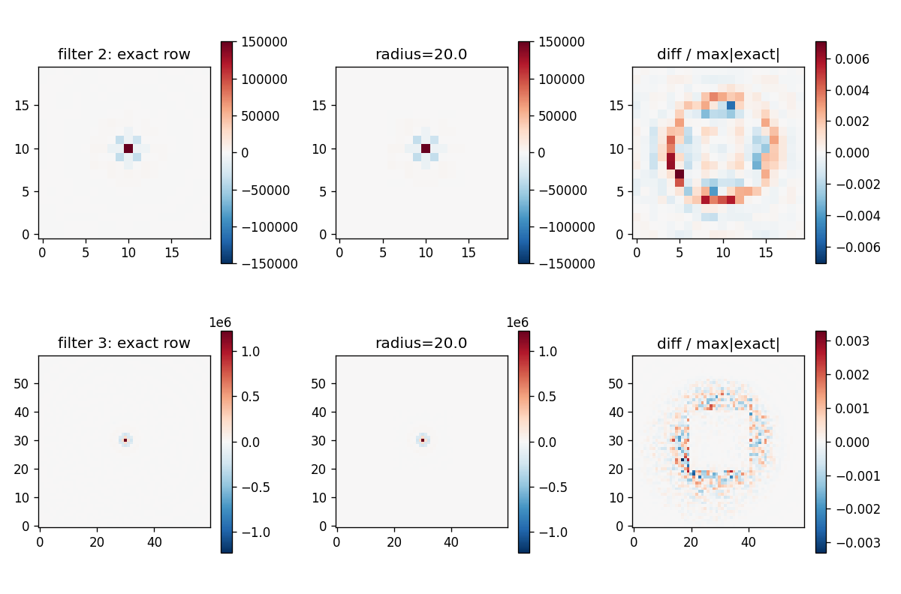
Each row of panels is one filter: the response-matrix row of the central lattice pixel (its response over the band's map) from the exact matrix, from the probed matrix at the largest radius, and their difference. The first two share one symmetric colour scale; the difference is divided by the peak of the exact row and has its own colour scale (note the much smaller range). The error is zero inside the probe window and sits in a ring just outside it, where the truncated tail of the response is dropped.
Full-size example (twores_ex.py, 3″ pixels, 218×218, 2 TODs, 10 filters, ANA for scales > 60″, radius 30): M2 ANA 15 s, ACT 2 s, whole script ~1 min, versus an 87 GB dense cache before.
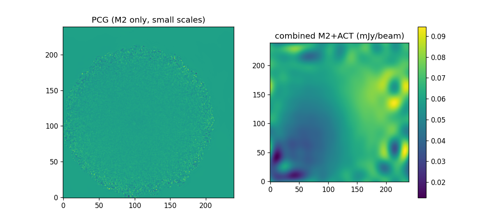
PCG (M2 only, all scales, 50 iterations), ACT only (inverse variance weighted coadd of the splits), the combined correction (M2 ANA solved for all bands down to the 5″ scale, bands 0–8; ACT only in bands 0–3) and final = PCG + combined. Units are Jy/beam, the units of the M2 TODs. The final map is padded by 25% of the data extent on each side. The panels are not smoothed; pixels with fewer than 20 hits are filled with the ACT map (plotting only). A fifth panel shows the final map smoothed to the ACT beam on the ACT colour scale; colour limits elsewhere are the 1st–99th percentiles of unmasked pixels.
With 20 TODs the final map has a central rms (smoothed 6 px) of 5.3×10-5 against 2.3×10-4 for PCG alone, and, smoothed to the ACT beam, correlates with ACT at 0.91 inside the footprint (PCG alone: −0.61). The large-scale artifact of the PCG map (a ±0.5 mJy gradient from the poorly constrained large-scale modes) is removed by the combined solve. With only 2 TODs M2 is too noisy for the cold spot to show above the PCG noise (about 1 mJy per pixel).
The M2 response is built for every band with extent above --max-res (default 5″; bands 0–8 at 3″ pixels), not just the coarse ones. Fine bands have large lattices (band 7: 360² = 129,600 points), so each band gets its own probing radius (twice the filter's real-space extent, capped by --radius), solve_bands switches to Jacobi-preconditioned CG above 20,000 points, and the response cache is per band. With 20 TODs the M2 response took 2400 s for bands 5–8 plus reuse of 0–4 caches, the solve 1090 s (60 min wall, 1 node), no CG convergence warnings. The final map is essentially unchanged relative to bands 0–3 only (central rms smoothed 6 px: 4.82×10-5 in both; difference rms 2.5×10-5): PCG already converges the small scales, and the fine bands only fix the noise weighting there.
act_conversion (thermodynamic to RJ temperature, matching witch.utils.K_CMB2K_RJ, times the M2 beam solid angle; 90 GHz and 9″ FWHM by default, 4.37×10-7 Jy/beam per µK). The TODs are taken to be in Jy: their median per sample noise is about 2, realistic for Jy/beam but not for mJy. With the factor 1000 wrong ACT was effectively weighted far too low against M2, which hid the cold spot (--m2-unit mJy switches back).--act-beam) and 30″ pixels; the response matrix is KT B PT N-1 P B K.--act-min-transfer): transfers are 0.95, 0.79, 0.46, 0.09, 0.002 for bands 0–4, so bands 0–3. Dropping band 3 from the combined solve made the result worse (correlation with ACT 0.71, central rms 8.9×10-5, arcs of residual M2 artifact around the footprint), so band 3 is kept. The M2 and ACT precisions per band relative to each other show no band without information: M2/ACT diagonal ratio is 2×10-6, 8×10-5, 2×10-3, 5×10-2 in bands 0–3 with the M2 filter transfer of the ACT map 0.5–0.9.solve_bands(ridge=)) acts as a zero-mean prior. A ridge relative to the median diagonal was singular for M2-only bands, where most pixels have no data.Remaining ringing in the periphery of the final map comes from band 3 (low ACT transfer, no M2 data outside the footprint) and from the periodic wrap of the filters.
twores_ex.py --direct solves the mapmaking equation directly: the final map is wav2map_real(solve_bands(rhsM2 + rhsACT, responses)) with the right hand side of the full (unsubtracted) M2 data, the ACT term built from the ACT map itself rather than a residual, and ANA in all bands (--max-res is ignored). PCG is only run to clean the noise estimate (its model enters set_noise(dat=...) but is never subtracted from the data or added to the map). Without the flag the old behaviour (PCG + correction) is unchanged. The M2 hits mask (--min-hits 20) is applied in the mapmaking in both modes.
With 20 TODs the direct map has a pixel rms of 2.6×10-4 against 3.3×10-4 for PCG + correction, correlates with ACT (ACT beam, inside the footprint) at 0.85 against 0.90, and the two maps correlate at 0.92 after smoothing by 6 px; the difference is mostly confined to the low-hit rim.
Each probe is one full pass over the TODs (TodVec.dot); the number of passes per band is (2·ceil(radius/downsamp)+1)2, or one per lattice point for bands below --exact-below (default 5000). At 3″ pixels, 10 filters and radius 30, band 5 (3600 lattice points) is computed exactly and takes 3600 of the 6245 passes. About 76% of a pass is the noise model (apply_noise: two dense detector rotations and two FFTs per TOD); map2tod and tod2map (numba) are 2% and 9%. Threads scale poorly (4 TODs: 38 ms per pass on 1 thread, 22 ms on 8), but MPI over TODs scales almost perfectly (1 rank × 4 TODs: 38 ms; 8 ranks × 4 TODs: 49 ms) and gives the same maps as one process (differences ~10-9). Run with OMP_NUM_THREADS=1 OPENBLAS_NUM_THREADS=1 NUMBA_NUM_THREADS=1 mpirun -n N python twores_ex.py ...; --ntods is per rank. Each rank holds the response matrices, about 6 GB peak while probing band 7, so memory limits N.
--exact-below 1000 probes band 5 instead (20 s instead of about 400 s at 20 TODs). Relative to the exact band 5 the final map has the same ACT correlation (0.845), a 6 px smoothed correlation of 0.9993 and a pixel level difference of 9% of the map rms, from a matrix error of about 1% of its largest entry (1 TOD benchmark).
All 138 Signal_* files of MOOJ1142 (no blacklist preset exists for it), direct solve, --min-hits 20, 16 MPI ranks on one node (the data are on that node's disk; 16 ranks keep the replicated response matrices within memory), default accuracy (band 5 exact). The map is 480×480 at 3″. The M2 response took 1226 s, ACT 13 s, the solve 220–320 s (replicated on every rank), about 31 min wall in total, with no CG convergence warnings. Inside the footprint (hits ≥ 20) the pixel rms is 5.1×10-5 Jy/beam (3.0×10-5 smoothed by 6 px) and, smoothed to the ACT beam, the map correlates with ACT at 0.98. The cold spot is clear at the centre in both the M2 map and the ACT beam panel. Plotted with examples/plot_final_aplpy.py (aplpy; the left panel shows only pixels with at least 20 hits, the middle panel fills the rest with ACT).
Superseded: this figure was removed because it was made before the MPI reduction fix and is wrong. See "Full sample (106 TODs) after the fixes" at the end.
The all-TOD direct needlet map (50 PCG steps for the noise model, then the direct solve) against
minkasi_mpi_example.py (plain PCG) and minkasi_mask_example.py (--thresh 20),
both run with the MOOJ1142 blacklist, 106 TODs, 3″ pixels and --npass 0, i.e. the same 50 PCG steps.
The maps are reprojected to the needlet grid and only the pixels good in all three are shown. Note the needlet map
was made from all 138 TODs, before the blacklist was added to twores_ex.py (read_tods(..., name)).
The cache of the M2 response is keyed only by source name, so use a new --cache directory when the TOD set changes.
Superseded: this figure was removed because it was made before the MPI reduction fix and is wrong. See "Full sample (106 TODs) after the fixes" at the end.
Shared colour scale (dominated by the large-scale gradient left in the plain PCG map). Same frames with the scale of the needlet map:
The amplitude difference below was mostly a bug. SkyMap.mpi_reduce chunked by nx*ny, so for maps above 1e5 pixels only band 0 of a
wavelet map (shape (nfilt, nx, ny)) was summed over MPI ranks; the other bands of the rhs and of A x stayed rank-local. All 16-rank wavelet runs
(including the 138 TOD direct map) are affected: rank 0 wrote maps whose fine bands had the rhs of its own ~1/15 of the TODs but the response of all of them. Fixed (chunks by map.size, regression test
test_mpi_reduce_chunks_whole_wavelet_map). Single rank runs, the 4 rank 12″ controls and the PCG example maps were not affected.
The block-diagonal findings below (shift and ridge) remain true for the block solve, but are secondary.
Other fixes: get_response_matrix now probes the masked operator (as the rhs and PCG), min_eigenvalue has a fixed start (same shift on every rank),
block_solver factorizes once, and twores_ex.py --cg N solves with CG on the full M2 + ACT operator, preconditioned by the block solve.
Result for 40 TODs (blacklist applied, 16 ranks, 3″ pixels, --cg 40; response 15 min, preconditioner factorization 8 min per rank, 40 iterations 8 min).
The relative residual falls from 8.9e-3 to 4e-4 in 40 iterations and then stagnates (target 1e-4 not reached). Same 40 TODs through the two examples (--npass 0, 50 PCG steps):
| needlet CG | mask=20 PCG | plain PCG | |
|---|---|---|---|
| brightest compact source, 3 px mean (Jy/beam) | 1.5e-3 | 1.4e-3 | 1.2e-3 |
| power ratio PCG/needlet, 0.3–1.8′ | 1 | 0.78 | 0.78 |
| correlation with ACT after the ACT beam | 0.76 | 0.30 | −0.46 |
The amplitudes now agree (previously a 15× lower source peak). The needlet map has about 13% more amplitude at 0.3–1.8′ than the unconverged 50 step PCG, as expected from a converged solve (the 4 rank test gave +11%). Figure:
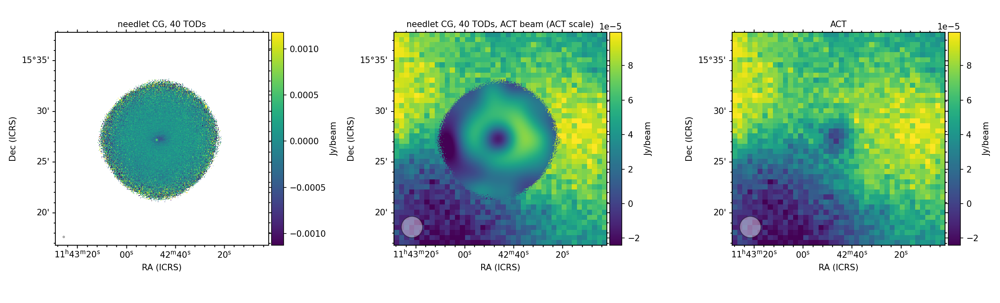
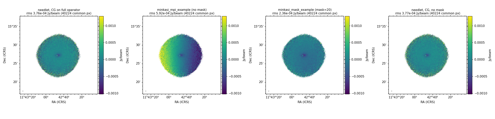
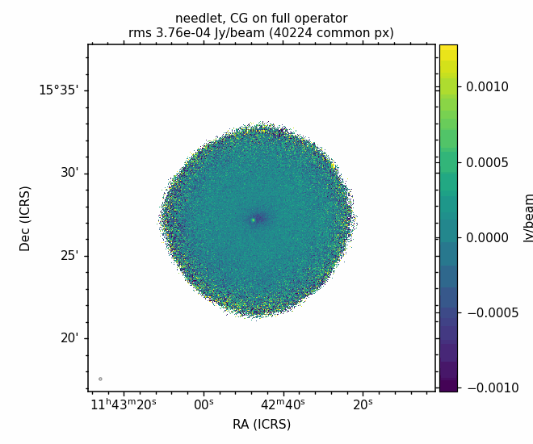
and with the needlet colour scale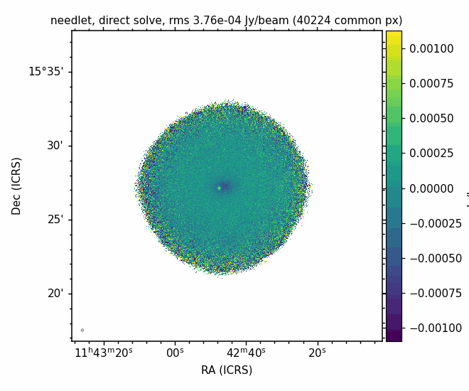
In the common pixels (hits ≥ 20) the pixel rms is 5.0e-5 (needlet), 2.0e-4 (mask=20 PCG) and 7.3e-4 (plain PCG) Jy/beam. The needlet map has 15× lower peak on the brightest compact source, 4× lower pixel-to-pixel noise and 5–7× lower amplitude at 0.5–2′ scales, i.e. it is not an overall scale factor. At the ACT scale (bands 0–3, where ACT constrains the map) its amplitude agrees with ACT (slope 1.09 after a 2′–8′ band-pass, correlation 0.97).
solve_bands adds a diagonal shift of that size on top of the 1e-3 ridge.
Relative to the in-footprint diagonal the solution is multiplied by d/(d+shift): median 0.63–0.89 in bands 5–8 and 0.28 in band 9, with 10th percentile 0.03–0.4 in the shallow regions. Compact sources live in the finest bands and the shallow regions are damped most.So the absolute scale of the fine bands in the direct map is set by the regularization, not the data. Candidates: couple neighbouring bands in the solve (the off diagonal blocks of the ANA), use a local rather than global shift, enforce positive definiteness of the probed matrices, or use the probed ANA as a preconditioner for CG on the full system.
examples/ridge_test.py: 4 TODs, 12″ pixels, M2 only, exact response matrices)get_response_matrix probes the unmasked real space map, while the rhs and PCG are masked, so G differs from the operator in use (|Ax−Gx|/|Gx| = 1.6e-3 here, 2.9e-15 for a masked probe).
As a preconditioner this only slows convergence (residual 2.5e-5 vs 7e-6 after 40 iterations); as a direct solve it is a smaller effect than the block approximation. It should still be fixed.tests/test_needlet.py: band transforms vs full transforms, exact ANA vs brute force, probing accuracy, map response, solve round trip, colouring.
Same 40 TODs, 16 ranks, mask 20, cached masked response, --direct without --cg (output needlets/blk40). Brightest source, 3 px mean: block solve 1.76e-3, CG 1.89e-3 (93%). Pixel rms in the hits≥20 pixels: 2.4e-4 (block) and 3.9e-4 (CG). Band-pass rms (Gaussian 2 px minus 10 px): 7.4e-5 and 5.7e-5; (20 minus 60 px): 1.85e-5 and 1.61e-5. Correlation of the two maps: 0.60 in the first band-pass, 0.32 in the second. So the reduce bug explains the ~15x source suppression; the shift damping is not the dominant effect on the source amplitude. The block solve still differs from CG in the extended structure.
| Option | What it does | Cost (40 TODs, 16 ranks) | Verdict |
|---|---|---|---|
--direct --cg N | CG on the full M2+ACT operator, block solve as preconditioner | response 15 min (cached), factorization 8 min, 40 its 8 min | Recommended. Solves the real equation; reproduces PCG on the 4-rank control. |
--direct (block solve only) | ANA-1·rhs per band, no band coupling | about 9 min on cached response | Quick look at compact sources (93% of CG peak); wrong extended structure (corr 0.3–0.6). |
--min-hits 0 | No hits mask | as above | Same rms as masked on the common pixels; use 20 as in the PCG examples for a fair comparison. |
| PCG examples | minkasi_mpi_example, minkasi_mask_example | minutes | Reference. Plain PCG has the large-scale gradient; mask=20 is the better reference. |
The relative residual of the 40 TOD CG solve flattens at 3–4e-4 (2.8e-4 after 80 iterations). Checks, all on the 40 TOD, mask 20 problem:
twores_ex.py --cg --symcheck, random wavelet vectors): M2, ACT and M2+ACT are symmetric to ~1e-18; the block preconditioner to 4e-11 and positive definite. So neither is the cause.--consistent 20: rhs replaced by A·x): the residual keeps falling, to ~5e-5 after 40 iterations against 4e-4 for the real rhs. The real rhs has a component outside the range of the operator that no iterate removes; it does not change the solution. The consistent rhs is smoother than the real one, so the gap is somewhat overstated.--cg 80 --cg-save ..., cg_convergence.py): the map still changes, but mostly at large scales.| band sigma (px, 3″) | 0.01–1 | 1–2 | 2–4 | 4–8 | 8–16 | 16–32 | 32–64 |
|---|---|---|---|---|---|---|---|
| rms change 20→40 / rms(iter 80) | 0.04 | 0.06 | 0.12 | 0.27 | 0.44 | 0.62 | 0.81 |
| rms change 40→80 / rms(iter 80) | 0.02 | 0.03 | 0.07 | 0.15 | 0.23 | 0.33 | 0.49 |
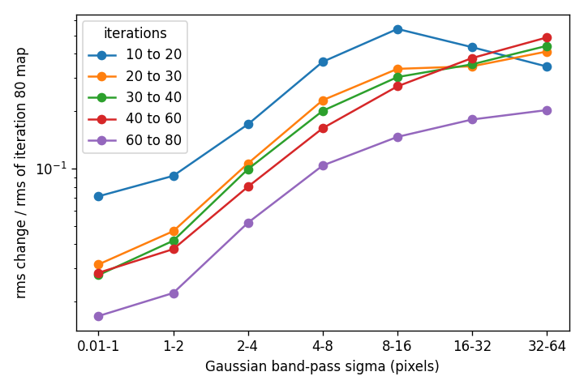
Below ~12″ the map is converged to under 8%; at 1′ and above it still changes by 33–49% between iterations 40 and 80 (an underestimate of the distance to the converged map, as iteration 80 is not converged either). The residual norm barely sees this. Large scales converging slowly is expected for CG; that ACT does not speed them up more is not understood.
Note: this section, like everything above the "Correction of the ACT weight" section, used the 100× too large ACT weight. The corrected results for the same 106 TODs are at the end.
All 106 non-blacklisted MOOJ1142 TODs, 16 ranks (7 per rank), --direct --cg 80, mask 20, 3″ pixels, output needlets/all106; PCG references with 50 steps, no noise passes (ref106). The M2 response took about 23 min (the ACT response cache of a first attempt was copied from the 40 TOD run, whose grid differs, and crashed the solver when added: caches are only valid for the TOD set they were made with). With the shared preconditioner the factorization took 137 s and the 80 iterations 501 s in total. Relative residual: 1.7e-2 (1 iteration), 1.3e-3 (10), 9.5e-4 (40), 9.3e-4 (80).
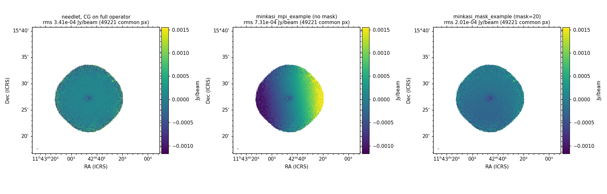
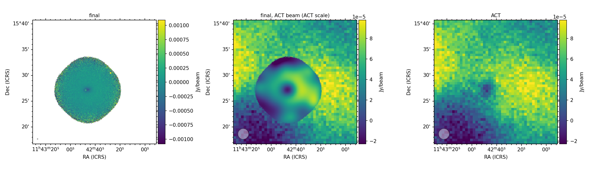
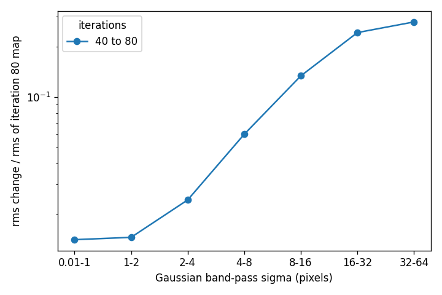
ACT enters the solve through the diagonal, white inverse variance ivar in bands 0–3 (beam transfer ≥ 0.05), everywhere on the map. That noise model ignores the CMB, which is correlated noise for the cluster signal, so the weight of ACT against M2 may be too high. Test (--act-ivar-scale, which multiplies the ACT inverse variance and its rhs): the 40 TOD CG run with the ACT weight reduced by 10 and 100 (needlets/actscale), against the unscaled run (cg40). Relative residual after 40 iterations: 4.0e-4 (1), 4.3e-4 (0.1), 1.8e-3 (0.01).
| band sigma (px, 3″) | 0.01–1 | 1–2 | 2–4 | 4–8 | 8–16 | 16–32 | 32–64 |
|---|---|---|---|---|---|---|---|
| rms(map0.1 − map1) / rms(map1) | 0.02 | 0.02 | 0.06 | 0.10 | 0.18 | 0.28 | 0.41 |
| rms(map0.01 − map1) / rms(map1) | 0.02 | 0.03 | 0.07 | 0.14 | 0.20 | 0.30 | 0.44 |
The central decrement (minimum of the map smoothed by 4 px within 3′ of the centre) is −3.23e-4, −3.22e-4 and −3.31e-4 Jy/beam, i.e. it changes by 2% for a factor 100 in the ACT weight; the brightest compact source changes by 2% as well. Scales below ~12″ change by under 7%. At 1′ and above the map changes by 28–44%, but this is confounded: these are the scales still converging (the iteration 40 to 80 change was 15–49% in the same bands), and with less ACT weight the large scales are barely constrained at all. The change is almost the same for 0.1 and 0.01, so the weight matters little once ACT is down by a factor 10. Not tested: replacing the white ivar by a Fourier space weight 1/(σ2 + CCMB(k)) (CCMB from CAMB, see minkasi_jax/witch/noise.py).
Normalization. read_act gives the ACT inverse variance of an ACT pixel, repeated on its 10×10 fine pixels, and the ACT term sums over fine pixels, so every ACT pixel was counted 100 times: ACT was weighted 100× too strongly in all runs above. Now divided by ACT_OSAMP2 (the ACT response cache name carries _n10). The run with the corrected weight (CG residual 1.82e-3 after 40 iterations, 177 s) is identical in residual to the --act-ivar-scale 0.01 run above, as it should be.
CMB. --act-cmb S multiplies each Fourier mode of the ACT noise precision by Nl/(Nl + S Cl Bl2) (lensed CAMB Cl, Planck 2018; B the 2.1′ ACT beam; Nl from the median ivar), as diag(√ivar) W diag(√ivar); S = 0 is the white model. Not included: foregrounds, the ACT pixel window, non-stationarity beyond the √ivar factors. Median total ACT ivar in the field: 2.1e-3 µK-2 per 0.5′ pixel (22 µK), giving weights 1.7e-4 (l=500), 1.6e-3 (1000), 3.5e-2 (2000), 0.49 (3000), 1.0 (5000): the CMB makes ACT nearly uninformative on the scales of the footprint.
40 TODs, same settings, CMB (S=1) against the corrected white weight (rms of the difference over the rms of the white map, Gaussian band-pass sigma in pixels of 3″):
| band sigma (px) | 0.01–1 | 1–2 | 2–4 | 4–8 | 8–16 | 16–32 | 32–64 |
|---|---|---|---|---|---|---|---|
| rms(CMB − white) / rms(white) | 0.00 | 0.00 | 0.00 | 0.02 | 0.06 | 0.15 | 0.40 |
Central decrement (map smoothed by 4 px, minimum within 3′ of the centre): −3.23e-4 (old, 100× weight), −3.31e-4 (corrected white), −3.59e-4 Jy/beam (CMB), i.e. 8% deeper with the CMB counted as noise. CG residual after 40 iterations 2.0e-3. The changes at 1′ and above are confounded with the unconverged large scales; the compact structure is unaffected.
Same 106 TODs, mask 20, 16 ranks, --direct --cg 80 as the full sample section above, but with the ACT weight normalized per ACT pixel (the section above has the 100× overweight), without (--act-cmb 0) and with (--act-cmb 1) the lensed CMB counted as noise (needlets/all106_cmb/c0, c1; M2 response and the eigenvalue cache reused). The block preconditioner now factorizes in 7 s with the eigenvalue cache. CG residual: 1.0e-1, 3.2e-3, 1.7e-3, 1.06e-3 (CMB) and 9.3e-2, 3.0e-3, 1.6e-3, 1.05e-3 (white) after 1, 10, 40, 80 iterations: converged no better than the earlier run.
| band sigma (px) | 0.01–1 | 1–2 | 2–4 | 4–8 | 8–16 | 16–32 | 32–64 |
|---|---|---|---|---|---|---|---|
| rms(white corrected − old) / rms(old) | 0.01 | 0.01 | 0.01 | 0.03 | 0.07 | 0.18 | 0.28 |
| rms(CMB − old) / rms(old) | 0.01 | 0.01 | 0.01 | 0.05 | 0.15 | 0.40 | 0.79 |
Central decrement (map smoothed by 4 px, minimum within 3′ of the centre): −3.06e-4 (old), −3.14e-4 (white, corrected), −3.75e-4 Jy/beam (CMB): 19% deeper than the corrected white model (8% on 40 TODs). Pixel rms in the footprint is 3.5e-4 for all three. As on 40 TODs, scales below ~24″ are unaffected and the changes at 1′ and above are confounded with the unconverged large scales, so the decrement change is suggestive and not a measurement of the bias of the white model.
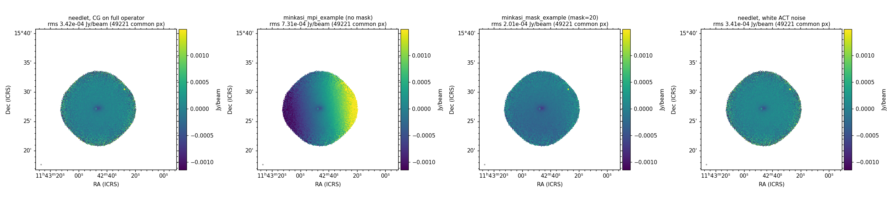
Final map with the CMB weight; in the middle panel (the map at ACT resolution on the ACT scale) the central decrement is deeper than in the white-weight map of the section above.
Same 106 TODs, 16 ranks, --direct --cg 80, mask 20 (needlets/all106_cmb): corrected white ACT weight (c0) and white plus lensed CMB (--act-cmb 1, c1), the M2 response from the first 106 TOD run. With the lmin cache and the shared preconditioner the factorization took 6.9 s (137 s before) and a run about 20 min. Relative residual after 1, 10, 40, 80 iterations: c0 9.3e-2, 3.0e-3, 1.6e-3, 1.05e-3; c1 1.0e-1, 3.2e-3, 1.7e-3, 1.06e-3 (old weight: 1.7e-2, 1.3e-3, 9.5e-4, 9.3e-4). Band-pass rms of the difference with the old map, and of c1 with c0 (sigma in pixels of 3″):
| band sigma (px) | 0.01–1 | 1–2 | 2–4 | 4–8 | 8–16 | 16–32 | 32–64 |
|---|---|---|---|---|---|---|---|
| rms of the old map | 2.9e-4 | 7.3e-5 | 3.9e-5 | 2.3e-5 | 1.9e-5 | 1.7e-5 | 1.2e-5 |
| rms(c0 − old) / rms(old) | 0.01 | 0.01 | 0.01 | 0.03 | 0.07 | 0.18 | 0.28 |
| rms(c1 − old) / rms(old) | 0.01 | 0.01 | 0.01 | 0.05 | 0.15 | 0.40 | 0.79 |
| rms(c1 − c0) / rms(c0) | 0.00 | 0.00 | 0.01 | 0.04 | 0.11 | 0.29 | 0.61 |
Central decrement (map smoothed by 4 px, minimum within 3′ of the centre): −3.06e-4 (old weight), −3.14e-4 (corrected white), −3.75e-4 Jy/beam (CMB): 20% deeper than the corrected white weight, a larger shift than with 40 TODs (8%). Pixel rms in the footprint is unchanged (3.5e-4). Scales below ~12″ are unchanged (1% or less); the differences at 1′ and above are partly the unconverged large scales (see the convergence section). Figures: blink comparison with the PCG examples.

Final map (M2, at ACT resolution, and ACT) of the CMB weighted solve.
The two runs of the previous section continued to 200 CG iterations (needlets/all106_cmb_200), with the map saved every 40 iterations. Relative residual after 40, 80, 120, 160, 200: c1 (CMB) 1.7e-3, 1.06e-3, 9.9e-4, 1.02e-3, 1.01e-3; c0 (white) 1.6e-3, 1.05e-3, 9.6e-4, 1.01e-3, 9.9e-4: flat after about 100 iterations.
| iteration | decrement c0 | decrement c1 | c1/c0 | rms(c1−c0)/rms(c0), 16–32 px | 32–64 px |
|---|---|---|---|---|---|
| 40 | −3.13e-4 | −3.73e-4 | 1.19 | 0.30 | 0.65 |
| 80 | −3.14e-4 | −3.75e-4 | 1.19 | 0.28 | 0.60 |
| 120 | −3.15e-4 | −3.75e-4 | 1.19 | 0.27 | 0.53 |
| 160 | −3.15e-4 | −3.74e-4 | 1.19 | 0.25 | 0.47 |
| 200 | −3.16e-4 | −3.75e-4 | 1.18 | 0.24 | 0.42 |
The central decrement (4 px smoothed, within 3′ of the centre) is converged by iteration 40 in both runs and the CMB weight makes it 19% deeper at every iteration, so that difference is not a convergence effect. The large scales are not converged: the map change between successive saved iterations is 13–20% in the 16–64 px bands and does not decrease from 40 to 200 iterations (figures below, change relative to the iteration 200 map), at 1% at the smallest scales and 4–8% at 4–16 px. The difference between c1 and c0 at the largest scales shrinks (0.65 to 0.42) because both maps still move. The residual is flat while these scales move, so it cannot be used to decide convergence there.

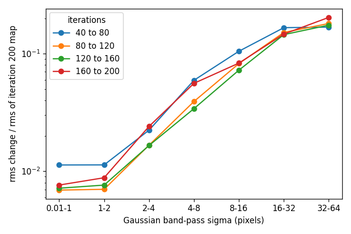
The CMB weighted solve of the 106 TODs with --min-hits 0 (needlets/all106_cmb_nomask), compared with the same solve masked at hits≥20 (all106_cmb/c1), both after 80 iterations. Relative residual 1.36e-3 unmasked (1.06e-3 masked). The comparison covers the pixels with hits≥20 only. Central decrement: masked −3.75e-4, unmasked −3.68e-4 (2% shallower).
| band sigma (px) | 0.01–1 | 1–2 | 2–4 | 4–8 | 8–16 | 16–32 | 32–64 |
|---|---|---|---|---|---|---|---|
| rms masked | 2.9e-4 | 7.3e-5 | 3.9e-5 | 2.3e-5 | 1.9e-5 | 1.8e-5 | 1.4e-5 |
| rms unmasked | 2.9e-4 | 7.3e-5 | 3.9e-5 | 2.3e-5 | 2.0e-5 | 1.9e-5 | 1.8e-5 |
| rms diff / rms masked | 0.05 | 0.06 | 0.09 | 0.20 | 0.36 | 0.47 | 0.53 |
Pixel rms of the unmasked map by hit count: 1–5 hits 3.9e-3, 5–20 hits 1.4e-3, 20–100 hits 6.6e-4, over 100 hits 2.1e-4 Jy/beam. The edge pixels are very noisy but, within the common region, the compact structure and the decrement are almost unchanged. Differences are at large scales, and these are also the unconverged ones, so the 47–53% there is not attributable to the mask alone.
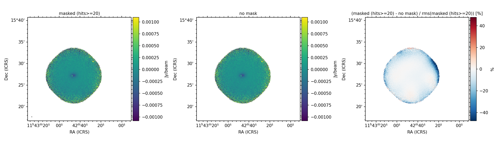